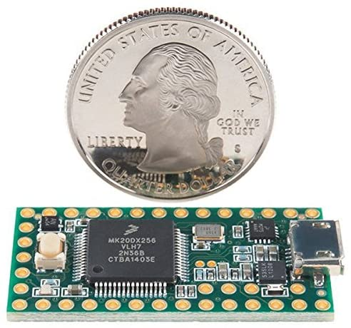
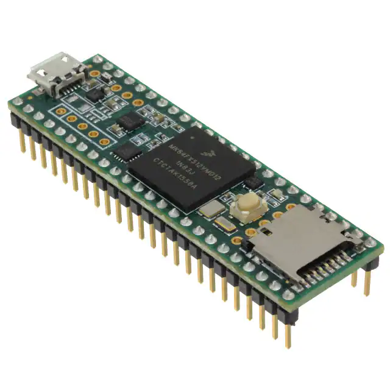
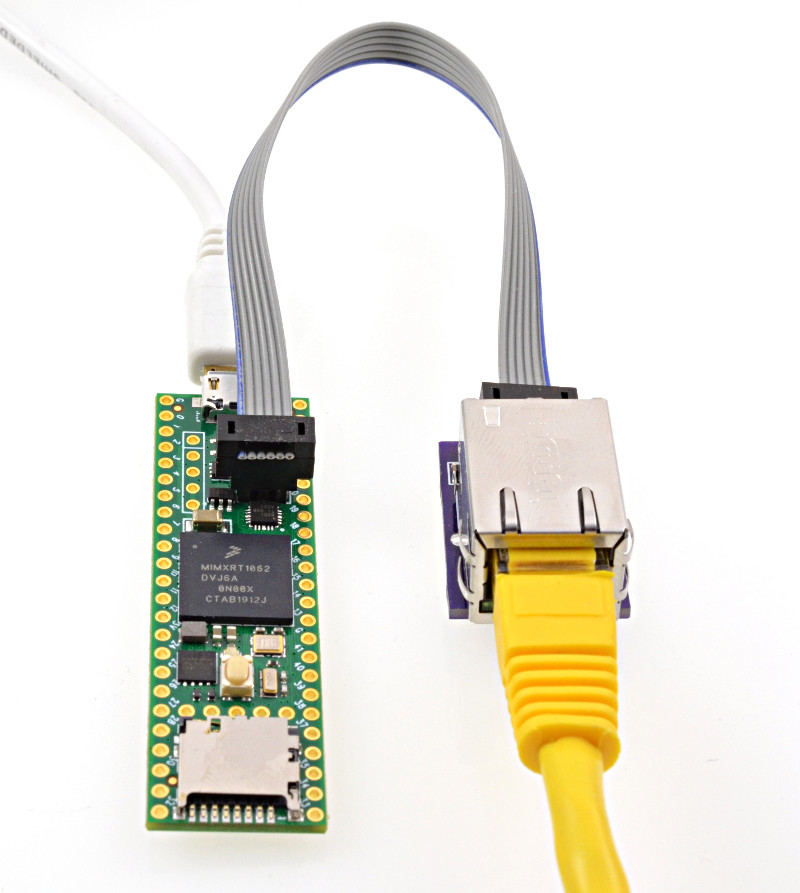
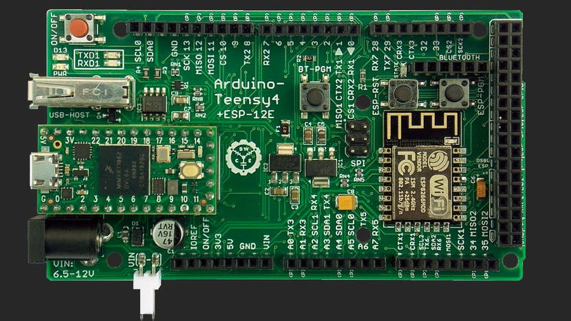

Teensy¶

Tinkerer Level
It’s teensy because it is even smaller than a nano, but it is even more powerful than a Nano Every. This is not an Arduino, it is from a company called PJRC. Since it is a different processor, there are a lot of changes in the software that load onto the teensy when you select that as your processor.
There are several versions 3.2, 3.5, 3.6, 4.0, 4.1. DCC++ EX will run on all these boards. The biggest difference is size/number of pins. You can also purchase the boards with or without the headers soldered on.
{kind=link}
The above is a Teensy 3.2 compared to a quarter. Below is a Teensy 3.6 if you need more GPIO pins
{kind=link}
There are even expansion boards to add WiFi and Ethernet. There is a Mega form factor board available to allow you to use 3.3V shields.
 {kind=link}
{kind=link}
Teensy Specifications¶
180 MHz ARM Cortex-M4 with Floating Point Unit
1M Flash, 256K RAM, 4K EEPROM
Microcontroller Chip MK66FX1M0VMD18
MK66FX1M0VMD18 USB High Speed (480 Mbit/sec) Port
2 CAN Bus Ports
32 General Purpose DMA Channels
22 PWM Outputs
4 I2C Ports
11 Touch Sensing Inputs
62 I/O Pins (42 breadboard friendly)
25 Analog Inputs to 2 ADCs with 13 bits resolution
2 Analog Outputs (DACs) with 12 bit resolution
22 PWM Outputs USB Full Speed (12 Mbit/sec)
Port Ethernet mac, capable of full 100 Mbit/sec speed
Native (4 bit SDIO)
micro SD card port
I2S Audio Port
4 Channel Digital Audio Input & Output
14 Hardware Timers
Cryptographic Acceleration Unit
Random Number Generator
CRC Computation Unit
6 Serial Ports (2 with FIFO & Fast Baud Rates)
3 SPI Ports (1 with FIFO)
4 I2C Ports Real Time Clock
The only downside is that PJRC is a very small company, it doesn’t have the resources or the staff of Arduino or Expressif. The board is also 3.3V, so you have to be careful that anything connected to the GPIO porst is also 3.3V
*TODO: Add pinouts and motor shield wiring diagrams*